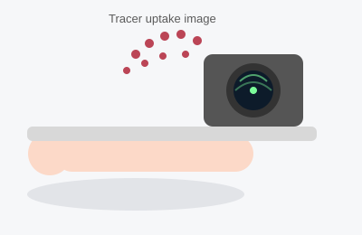

Nuclear Stress Test
A nuclear stress test (myocardial perfusion imaging) shows how well blood flows to different parts of your heart muscle, both at rest and during stress. It combines an exercise or medication-induced stress test with a special camera that tracks a small amount of radioactive tracer injected into your bloodstream, producing detailed pictures of blood flow to the heart.

Duration
2–4 hours total (two imaging sessions)
Fasting
No food or caffeine for 4 hours before (water is fine)
Sedation
None
Recovery
None — drive yourself; drink fluids to clear the tracer
What Happens During the Test
The test is usually done in two parts, sometimes on the same day and sometimes on two separate days. For each part, a small amount of radioactive tracer is injected into a vein, and after a short waiting period you lie still under a gamma camera that takes pictures of blood flow to your heart muscle — this takes about 15–30 minutes. One set of images is taken at rest, and one is taken after your heart has been stressed, either by walking on a treadmill or, if you cannot exercise, by a medication that temporarily increases blood flow to the heart in a similar way. Comparing the rest and stress images shows your doctor whether all parts of the heart muscle get enough blood flow, especially during exertion.
What the Patient Should Know
- No caffeine (coffee, tea, soda, chocolate, and some pain relievers that contain caffeine) for about 12–24 hours beforehand, and no food for 4 hours before — caffeine interferes with the stress medication.
- Wear comfortable clothing and walking shoes in case you are doing the treadmill version.
- Tell the office about all medications; you may be asked to hold certain heart medications the morning of the test.
- The radioactive tracer dose is small and similar to other common imaging tests; it leaves your body naturally within a day or two, and you should drink plenty of fluids afterward to help clear it.
- If you cannot exercise, a medication (such as regadenoson) is used instead to simulate the effects of exercise on blood flow — you may feel brief flushing, mild chest tightness, or shortness of breath for a minute or two, which resolves quickly.
- Plan for the appointment to take a few hours due to the waiting periods between injection and imaging.
Recovery
There is no real recovery period. You can drive yourself home and resume your normal activities right away. Drinking extra water for the rest of the day helps your body clear the tracer faster.
Why It Is Done
- Diagnose coronary artery disease when a standard treadmill test is inconclusive or cannot be performed.
- Determine which specific areas of the heart are not getting enough blood flow.
- Assess the severity of known coronary artery disease.
- Evaluate heart muscle damage after a heart attack.
Reliable Sources
- RadiologyInfo.org (ACR/RSNA), Nuclear Cardiology / Nuclear Heart Scan
- NHLBI, Heart Tests
This page is for general education only and does not replace advice from your doctor. If you have questions about your own test, please contact the office.